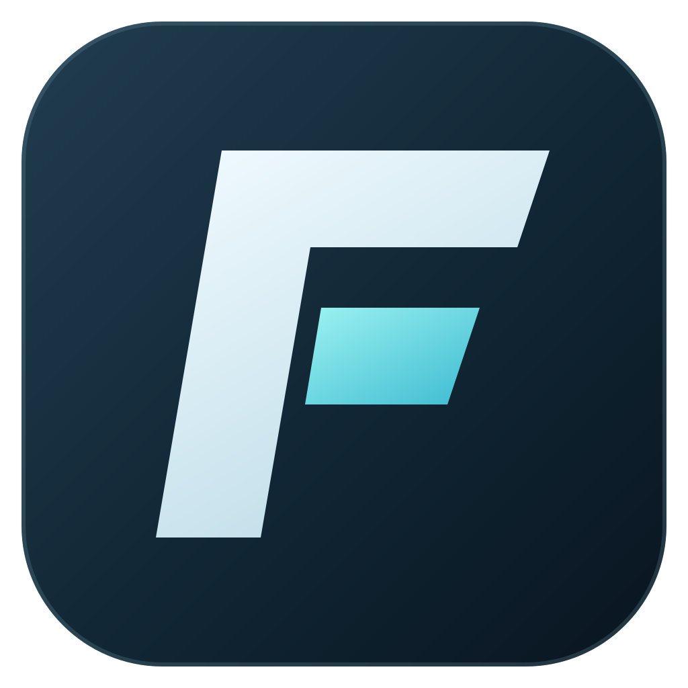

拖入装备，看到变化
装备、弹药、无人机与货舱统一配置。拖放预览、整组操作，让反复尝试更轻松。

EVE FITLABGitHub加入 QQ 或 Discord，交流装配、反馈问题、获取版本消息。
不用在脑海里计算取舍。
把想法装上去，再看看它能做到什么。
装备、弹药、无人机与货舱统一配置。拖放预览、整组操作，让反复尝试更轻松。
查看资源余量、抗性与电容稳定性。选择另一份装配作为靶标，调整距离与速度矢量。
通过 EVE SSO 导入角色技能，也可以自定义技能等级。用文件夹整理不同用途的角色。
简体中文 / 繁體中文 / English / 日本語
你好，我是深海的鱼，游戏里叫 ImFishMan。
欢迎把装配想法、使用建议和遇到的问题告诉我。